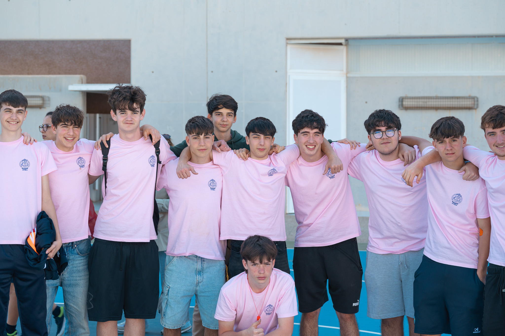

Preparacion Previa
Este día conlleva mucho tiempo de preparación para que todo salga a la perfección.

Durante la semana anterior al día de SED, los alumnos de 1º Bachiller son los encargados de preparar la jornada. Esto incluye la manufactura de la limonada 100% natural, la pintura de los carteles de los distintos bares y actividades realizados ese día, la inscripción de los participantes y la gestión de los enfrentamientos/cruces y por último la preparación de las instalaciones.
Limonada
Pocos días antes de la jornada voluntarios de 1º de bachiller estuvimos durante unas pocas horas en la tarde exprimiendo los limones necesarios para la limonada usando nuestros propios exprimidores y produciendo el hielo para crear la mezcla.
Inscripción y cruces
Durante la semana anterior al día de SED algunos alumnos estuvimos durante los recreos inscribiendo a todas aquellas personas que quisieran apuntarse a alguna de las actividades. Para llevar esto acabo, nos separamos en distintos grupos para poder recoger el dinero y apuntar a los participantes de manera más eficiente.
Finalmente, la víspera de SED pasamos toda la información a los excels correspondientes y realizamos el canva con los cruces y enfrentamientos el podía ser consutado a través de distintos códigos QR repartidos por el recinto.

.jpg)